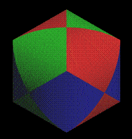

Intersecting cylindersWritten by Paul BourkeDecember 2003. Updated March 2016 to fix dodecahedron and icosahedron errors.
The following will discuss and illustrate various solids that result from the intersection of cylinders. By no means will all cases be covered but some Povray code will be provided (see later) that will allow for personal exploration. Plus (Two cylinders)Two perpendicular cylinders.
This is known as a Steinmetz solid, the surface area is 16r2 and the volume is 16r3/3. This result was known as far back as 500BC by the Chinese astronomer and mathematician Tsu Ch'ung Chi who also calculated pi to 6 decimal places, namely 355/113. The PovRay scene file that generated the above is: scene.pov and scene.ini. Tetrahedron (4 cylinders)
Cylinders through each vertex and the opposite face.
The volume is 12 (sqrt(8) - sqrt(6)) r3. Cube (3 cylinders)
Cylinders through the center of each face.
The volume is (16 - sqrt(128)) r3. Cube (6 cylinders)
Cylinders through the midpoint of each edge.
Volume is (16/3) (3 + sqrt(12) - sqrt(32)) r3 Dodecahedron (6 cylinders)
Cylinders through the midpoint of each face.
Icosahedron (6 cylinders)
Cylinders through the vertices.
Dodecahedron (10 cylinders)
Cylinders through the vertices.
Cylinders through the polyhedra vertices.
Povray files The following Povray model file will allow the reader to experiment with these volumes: cylinder.pov and cylinder.ini. It will be left as an exercise for the reader to work out how I achieved the face outlines with Povray :-). Random cylindersAs the number of cylinders increases the result is increasingly spherical, the following is the result from 100 randomly orientated (and randomly coloured) cylinders.
The "lines" that seem to run around the sphere (great circle lines) arise when two of the randomly placed cylinders are almost coincident. 200 random cylinders (Click for larger view)
Steinmetz solidWritten by Paul BourkeDecember 2003
The solid that results from the intersection of two cylinders (circular cross section) of the same radius and at right angles to each other is known as the Steinmetz solid. The intersection is as follows
The surface area is 16 r2 where r is the cylinder radius. The volume is 16 r3 / 3.
What object is a circle in plan, front and side views?(Besides a sphere)or What is the resulting geometry from the intersection of three cylinders?
Written by Paul Bourke
Question.
Is a 3D object uniquely described by a plan, front and side view?
The object described here has the same plan, front and side view as a sphere. Both the sphere and this object have circles as projections in these three views.
The following image was generated using the RayShade rendering package. It is of three semitransparent orthogonal intersecting cylinders coloured red, green, and blue.
The following shows the intersection solid of these three cylinders in plan, and two elevations as well as an isometric view. 
The volume of the intersection is 8 (2 - sqrt(2)) r3, where r is the radius of the cylinder. What is the volume of the whole object? Knowing the volume of a cylinder (pi r2 l) and the volume of the Steinmetz solid (16 r3 / 3)) then the volume can be calculated using the three dimensional version of the inclusion-exclusion principle, namely that:
So the volume is 3 pi r2 l - 8 sqrt(2) r3 where l is the length of the cylinders. I've had one of these made by carefully lathing a block of wood three times. The result is an interesting object to hold, it contains 8 "corners" and yet if you put it on a slope it will roll!
Credit to the staff in the workshop at the Auckland University School of Architecture, Property, and Planning for building this model for me. I originally designed this object because Architecture students would ask me why the computer couldn't scan their plans and elevations and automatically build a 3D model. This was the simplest demonstration I could come up that there isn't enough information about a 3D object in its plane projections. |
{kind=link}